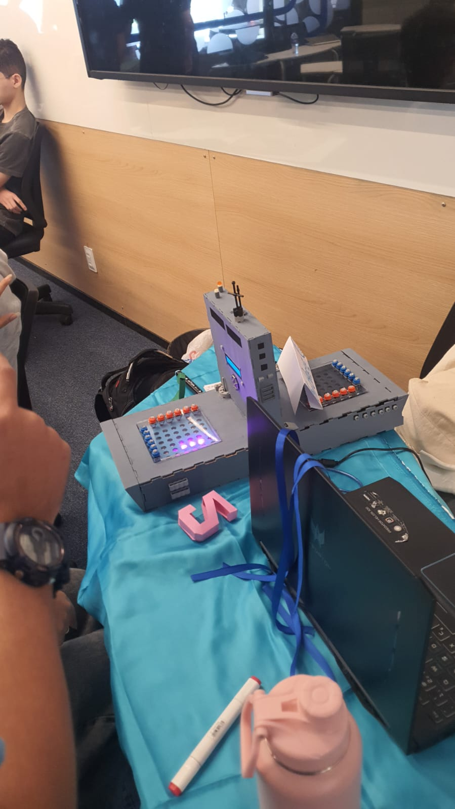

Meus Projetos

Radar Marítimo
O jogo " Radar Marítimo " adapta um jogo clássico, o Batalha Naval, para promover acessibilidade para as pessoas com Deficiência Intelectual, enquanto repensa um design ambíguo e uma jogabilidade já ultrapassada. O jogo é um poderoso promotor de cooperação e integração entre pessoas com e sem deficiência, graças à sua natureza lúdica e atrativa. Ele valoriza as habilidades dos jogadores com necessidades especiais,oferecendo recursos inclusivos que tornam a experiência acessível.